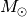
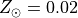

Using COSMIC to run BSE¶
COSMIC can evolve binaries for several different use cases. Below you’ll find examples to run a single binary system, multiple binary systems or a grid of binaries.
single binary¶
Below is the process to initialize and evolve a binary that could have formed a GW150914-like binary. First, import the modules in COSMIC that initialize and evolve the binary.
In [1]: from cosmic.sample.initialbinarytable import InitialBinaryTable
In [2]: from cosmic.evolve import Evolve
To initialize a single binary, populate the InitialBinaries method in the InitialBinaryTable class. Each initialized binary requires the following parameters:
m1 : ZAMS mass of the primary star in 
m2 : ZAMS mass of the secondary star in
porb : initial orbital period in days
ecc : initial eccentricity
tphysf : total evolution time of the binary in Myr
kstar1 : initial primary stellar type, following the BSE convention
kstar2 : initial secondary stellar type, following the BSE convention
metallicity : metallicity fraction (e.g. )
In [3]: single_binary = InitialBinaryTable.InitialBinaries(m1=85.543645, m2=84.99784, porb=446.795757, ecc=0.448872, tphysf=13700.0, kstar1=1, kstar2=1, metallicity=0.002)
In [4]: print(single_binary)
kstar_1 kstar_2 mass1_binary mass2_binary porb ecc metallicity tphysf mass0_1 ... tacc2 epoch1 epoch2 tms1 tms2 bhspin1 bhspin2 tphys binfrac
0 1.0 1.0 85.543645 84.99784 446.795757 0.448872 0.002 13700.0 85.543645 ... 0.0 0.0 0.0 0.0 0.0 0.0 0.0 0.0 1.0
[1 rows x 38 columns]
The flags for the various binary evolution prescriptions used in BSE also need to be set. Each flag is saved in the BSEDict dictionary. Note that the BSEDict only needs to be specified the first time a binary is evolved with COSMIC or if you need to change the binary evolution prescriptions.
If you are unfamiliar with these prescriptions, it is highly advised to either run the defaults from the COSMIC install (which are consistent with Rodriguez+2018 and Kremer+2018) or refer to Hurley+2002.
In [5]: BSEDict = {'xi': 1.0, 'bhflag': 1, 'neta': 0.5, 'windflag': 3, 'wdflag': 1, 'alpha1': 1.0, 'pts1': 0.001, 'pts3': 0.02, 'pts2': 0.01, 'epsnov': 0.001, 'hewind': 0.5, 'ck': -1000, 'bwind': 0.0, 'lambdaf': 0.5, 'mxns': 2.5, 'beta': 0.125, 'tflag': 1, 'acc2': 1.5, 'nsflag': 3, 'ceflag': 0, 'eddfac': 1.0, 'ifflag': 0, 'bconst': -3000, 'sigma': 265.0, 'gamma': -1.0, 'pisn': 45.0, 'natal_kick_array' : [-100.0,-100.0,-100.0,-100.0,-100.0,-100.0], 'bhsigmafrac' : 1.0, 'polar_kick_angle' : 90, 'qcrit_array' : [0.0,0.0,0.0,0.0,0.0,0.0,0.0,0.0,0.0,0.0,0.0,0.0,0.0,0.0,0.0,0.0], 'cekickflag' : 2, 'cehestarflag' : 0, 'cemergeflag' : 0, 'ecsn' : 2.5, 'ecsn_mlow' : 1.4, 'aic' : 1, 'ussn' : 0, 'sigmadiv' :-20.0, 'qcflag' : 2, 'eddlimflag' : 0, 'fprimc_array' : [2.0/21.0,2.0/21.0,2.0/21.0,2.0/21.0,2.0/21.0,2.0/21.0,2.0/21.0,2.0/21.0,2.0/21.0,2.0/21.0,2.0/21.0,2.0/21.0,2.0/21.0,2.0/21.0,2.0/21.0,2.0/21.0], 'bhspinflag' : 0, 'bhspinmag' : 0.0, 'rejuv_fac' : 1.0, 'rejuvflag' : 0, 'htpmb' : 1, 'ST_cr' : 1, 'ST_tide' : 0, 'bdecayfac' : 1}
Once the binary is initialized and the BSE model is set, the system is evolved with the the Evolve class, which calls the evolv2.f subroutine in the BSE source code.
In [6]: bpp, bcm, initC = Evolve.evolve(initialbinarytable=single_binary, BSEDict=BSEDict)
For every evolved binary system, BSE generates two arrays, which are stored as pandas DataFrames in COSMIC:
bpp - contains binary parameters at important stages in the binary’s evolution, including stellar evolutionary phase changes or mass transfer episodes.
bcm - contains several binary parameters at user specified time steps during the binary’s evolution. The default setting in COSMIC is to output the final stage of the binary at the evolution time specified by the user.
You can see the different parameters included in each DataFrame using the columns attribute of the DataFrame:
In [7]: print(bpp.columns)
Index(['tphys', 'mass_1', 'mass_2', 'kstar_1', 'kstar_2', 'sep', 'porb', 'ecc',
'RROL_1', 'RROL_2', 'evol_type', 'Vsys_1', 'Vsys_2', 'SNkick',
'SNtheta', 'aj_1', 'aj_2', 'tms_1', 'tms_2', 'massc_1', 'massc_2',
'rad_1', 'rad_2', 'bin_num'],
dtype='object')
In [8]: print(bcm.columns)
Index(['tphys', 'kstar_1', 'mass0_1', 'mass_1', 'lumin_1', 'rad_1', 'teff_1',
'massc_1', 'radc_1', 'menv_1', 'renv_1', 'epoch_1', 'ospin_1',
'deltam_1', 'RROL_1', 'kstar_2', 'mass0_2', 'mass_2', 'lumin_2',
'rad_2', 'teff_2', 'massc_2', 'radc_2', 'menv_2', 'renv_2', 'epoch_2',
'ospin_2', 'deltam_2', 'RROL_2', 'porb', 'sep', 'ecc', 'B_0_1', 'B_0_2',
'SNkick_1', 'SNkick_2', 'Vsys_final', 'SNtheta_final', 'SN_1', 'SN_2',
'bin_state', 'merger_type', 'bin_num'],
dtype='object')
The units are broadly consistent with BSE and are described in Describing the output of COSMIC/BSE: Columns names/Values/Units.
The evol_type column in bpp indicates the evolutionary change that occured for each line. The meaning of each number is described here, Evolve Type.
Each of the parameters in bpp or bcm can be accessed in the usual way for DataFrames:
In [9]: bpp.mass_1
Out[9]:
0 79.108675
0 78.950022
0 74.961000
0 62.504298
0 36.193092
0 35.967492
0 29.756686
0 26.781017
0 26.781632
0 26.781784
0 26.788115
0 26.790017
0 26.795951
0 26.795951
0 26.795951
0 26.795951
0 26.795951
0 26.797112
0 26.797112
0 26.797112
Name: mass_1, dtype: float64
In [10]: bpp[['mass_1', 'mass_2', 'kstar_1', 'kstar_2', 'sep', 'evol_type']]
Out[10]:
mass_1 mass_2 kstar_1 kstar_2 sep evol_type
0 79.108675 78.683604 2.0 1.0 1472.231060 2.0
0 78.950022 78.694920 2.0 1.0 1465.752849 3.0
0 74.961000 82.629593 2.0 1.0 1402.091213 14.0
0 62.504298 95.009745 4.0 1.0 1500.277207 2.0
0 36.193092 120.190561 4.0 1.0 2111.731418 4.0
0 35.967492 120.297763 7.0 1.0 2109.201352 2.0
0 29.756686 118.341654 7.0 1.0 2225.483076 15.0
0 26.781017 118.341654 14.0 1.0 2272.404255 2.0
0 26.781632 114.092334 14.0 1.0 2339.501573 12.0
0 26.781784 113.583415 14.0 1.0 2347.969129 13.0
0 26.788115 95.653528 14.0 2.0 2691.141794 2.0
0 26.790017 95.450417 14.0 2.0 2694.910646 3.0
0 26.795951 45.682681 14.0 4.0 479.998748 2.0
0 26.795951 45.682681 14.0 4.0 479.998748 7.0
0 26.795951 45.431698 14.0 7.0 413.621293 8.0
0 26.795951 45.431698 14.0 7.0 413.621293 4.0
0 26.795951 45.431698 14.0 7.0 413.621293 12.0
0 26.797112 36.283164 14.0 7.0 473.571799 16.0
0 26.797112 32.654848 14.0 14.0 504.352096 2.0
0 26.797112 32.654848 14.0 14.0 504.054963 10.0
You can use the utils.convert_kstar_evol_type function to convert the
kstar_1, kstar_2, and evol_type columns from integers to strings
that describe each int:
In [11]: from cosmic.utils import convert_kstar_evol_type
In [12]: convert_kstar_evol_type(bpp)
Out[12]:
tphys mass_1 mass_2 kstar_1 kstar_2 sep ... tms_2 massc_1 massc_2 rad_1 rad_2 bin_num
0 3.690752 79.108675 78.683604 Hertzsprung Gap MS, > 0.7 M⊙ 1472.231060 ... 3.751779e+00 35.165025 0.000000 34.648115 41.948713 0
0 3.692172 78.950022 78.694920 Hertzsprung Gap MS, > 0.7 M⊙ 1465.752849 ... 3.751596e+00 35.545247 0.000000 556.276476 40.893567 0
0 3.692639 74.961000 82.629593 Hertzsprung Gap MS, > 0.7 M⊙ 1402.091213 ... 3.692058e+00 35.670450 0.000000 1409.268580 39.541202 0
0 3.693378 62.504298 95.009745 Core Helium Burning MS, > 0.7 M⊙ 1500.277207 ... 3.544348e+00 35.868252 0.000000 6499.487640 26.427421 0
0 3.708827 36.193092 120.190561 Core Helium Burning MS, > 0.7 M⊙ 2111.731418 ... 3.356855e+00 35.967492 0.000000 387.714393 20.737378 0
0 3.710331 35.967492 120.297763 Naked Helium Star MS MS, > 0.7 M⊙ 2109.201352 ... 3.356264e+00 0.000000 0.000000 2.047982 20.765681 0
0 4.021468 29.756686 118.341654 Naked Helium Star MS MS, > 0.7 M⊙ 2225.483076 ... 3.367260e+00 0.000000 0.000000 1.821262 25.361548 0
0 4.021468 26.781017 118.341654 Black Hole MS, > 0.7 M⊙ 2272.404255 ... 3.367260e+00 26.781017 0.000000 0.000114 25.361555 0
0 4.653412 26.781632 114.092334 Black Hole MS, > 0.7 M⊙ 2339.501573 ... 3.392796e+00 26.781632 0.000000 0.000114 53.897392 0
0 4.656804 26.781784 113.583415 Black Hole MS, > 0.7 M⊙ 2347.969129 ... 3.396016e+00 26.781784 0.000000 0.000114 53.980776 0
0 4.842411 26.788115 95.653528 Black Hole Hertzsprung Gap 2691.141794 ... 3.537973e+00 26.788115 44.541057 0.000114 42.515094 0
0 4.843908 26.790017 95.450417 Black Hole Hertzsprung Gap 2694.910646 ... 3.537973e+00 26.790017 45.139129 0.000114 1325.189412 0
0 4.844640 26.795951 45.682681 Black Hole Core Helium Burning 479.998748 ... 3.537973e+00 26.795951 45.431698 0.000114 221.058799 0
0 4.844640 26.795951 45.682681 Black Hole Core Helium Burning 479.998748 ... 3.537973e+00 26.795951 45.431698 0.000114 221.058799 0
0 4.844640 26.795951 45.431698 Black Hole Naked Helium Star MS 413.621293 ... 3.537973e+00 26.795951 0.000000 0.000114 221.058799 0
0 4.844640 26.795951 45.431698 Black Hole Naked Helium Star MS 413.621293 ... 2.762655e-01 26.795951 0.000000 0.000114 2.352064 0
0 4.844640 26.795951 45.431698 Black Hole Naked Helium Star MS 413.621293 ... 2.762655e-01 26.795951 0.000000 0.000114 2.352064 0
0 5.136269 26.797112 36.283164 Black Hole Naked Helium Star MS 473.571799 ... 3.099979e-01 26.797112 0.000000 0.000114 2.053374 0
0 5.136269 26.797112 32.654848 Black Hole Black Hole 504.352096 ... 3.099979e-01 26.797112 32.654848 0.000114 0.000138 0
0 13700.000000 26.797112 32.654848 Black Hole Black Hole 504.054963 ... 1.000000e+10 26.797112 32.654848 0.000114 0.000138 0
[20 rows x 24 columns]
Note that utils.convert_kstar_evol_type is only applicable to the bpp
array.
You can also use the built in plotting function to see how the system evolves:
In [13]: from cosmic.plotting import evolve_and_plot
In [14]: fig = evolve_and_plot(initC, t_min=None, t_max=None, BSEDict={}, sys_obs={})
(Source code, png, hires.png, pdf)
{kind=link}
{kind=link}
In this case, all the action happens in the first few Myr, so let’s specify a t_max:
In [15]: fig = evolve_and_plot(initC, t_min=None, t_max=6.0, BSEDict={}, sys_obs={})
(Source code, png, hires.png, pdf)
{kind=link}
{kind=link}
multiple binaries¶
Multiple systems can also be initialized and evolved; below is an example for systems that could form GW150914 and GW170817 - like binaries.
In [16]: binary_set = InitialBinaryTable.InitialBinaries(m1=[85.543645, 11.171469], m2=[84.99784, 6.67305], porb=[446.795757, 170.758343], ecc=[0.448872, 0.370], tphysf=[13700.0, 13700.0], kstar1=[1, 1], kstar2=[1, 1], metallicity=[0.002, 0.02])
In [17]: print(binary_set)
kstar_1 kstar_2 mass1_binary mass2_binary porb ecc metallicity tphysf mass0_1 ... tacc2 epoch1 epoch2 tms1 tms2 bhspin1 bhspin2 tphys binfrac
0 1.0 1.0 85.543645 84.99784 446.795757 0.448872 0.002 13700.0 85.543645 ... 0.0 0.0 0.0 0.0 0.0 0.0 0.0 0.0 1.0
1 1.0 1.0 11.171469 6.67305 170.758343 0.370000 0.020 13700.0 11.171469 ... 0.0 0.0 0.0 0.0 0.0 0.0 0.0 0.0 1.0
[2 rows x 38 columns]
In [18]: import numpy as np
In [19]: np.random.seed(5)
In [20]: bpp, bcm, initC = Evolve.evolve(initialbinarytable=binary_set, BSEDict=BSEDict)
Note that the BSEDict did not be reinitialized since the BSE model did not change.
As before, bpp, bcm, and initC are returned as pandas DataFrames which assign an index to each binary system we evolve. We can access each binary as follows:
In [21]: print(bpp.loc[0])
tphys mass_1 mass_2 kstar_1 kstar_2 sep porb ... tms_1 tms_2 massc_1 massc_2 rad_1 rad_2 bin_num
0 3.690752 79.108675 78.683604 2.0 1.0 1472.231060 521.186609 ... 3.744981e+00 3.751779e+00 35.165025 0.000000 34.648115 41.948713 0
0 3.692172 78.950022 78.694920 2.0 1.0 1465.752849 517.992247 ... 3.744981e+00 3.751596e+00 35.545247 0.000000 556.276476 40.893567 0
0 3.692639 74.961000 82.629593 2.0 1.0 1402.091213 484.698211 ... 3.744981e+00 3.692058e+00 35.670450 0.000000 1409.268580 39.541202 0
0 3.693378 62.504298 95.009745 4.0 1.0 1500.277207 536.623624 ... 3.744981e+00 3.544348e+00 35.868252 0.000000 6499.487640 26.427421 0
0 3.708827 36.193092 120.190561 4.0 1.0 2111.731418 899.361940 ... 3.744981e+00 3.356855e+00 35.967492 0.000000 387.714393 20.737378 0
0 3.710331 35.967492 120.297763 7.0 1.0 2109.201352 898.086169 ... 3.113973e-01 3.356264e+00 0.000000 0.000000 2.047982 20.765681 0
0 4.021468 29.756686 118.341654 7.0 1.0 2225.483076 999.846910 ... 3.435845e-01 3.367260e+00 0.000000 0.000000 1.821262 25.361548 0
0 4.021468 26.781017 118.341654 14.0 1.0 2272.232089 1042.038011 ... 3.435846e-01 3.367260e+00 26.781017 0.000000 0.000114 25.361555 0
0 4.653412 26.781633 114.092334 14.0 1.0 2339.324317 1104.822325 ... 1.000000e+10 3.392796e+00 26.781633 0.000000 0.000114 53.897392 0
0 4.656804 26.781785 113.583415 14.0 1.0 2347.791230 1112.837241 ... 1.000000e+10 3.396016e+00 26.781785 0.000000 0.000114 53.980776 0
0 4.842411 26.788115 95.653528 14.0 2.0 2690.937817 1462.052873 ... 1.000000e+10 3.537973e+00 26.788115 44.541057 0.000114 42.515094 0
0 4.843908 26.790018 95.450422 14.0 2.0 2694.706930 1466.331004 ... 1.000000e+10 3.537973e+00 26.790018 45.139115 0.000114 1325.089180 0
0 4.844640 26.795952 45.682662 14.0 4.0 479.959455 143.144297 ... 1.000000e+10 3.537973e+00 26.795952 45.431698 0.000114 220.957962 0
0 4.844640 26.795952 45.682662 14.0 4.0 479.959455 143.144297 ... 1.000000e+10 3.537973e+00 26.795952 45.431698 0.000114 220.957962 0
0 4.844640 26.795952 45.431698 14.0 7.0 413.580924 143.144297 ... 1.000000e+10 3.537973e+00 26.795952 0.000000 0.000114 220.957962 0
0 4.844640 26.795952 45.431698 14.0 7.0 413.580924 114.699405 ... 1.000000e+10 2.762655e-01 26.795952 0.000000 0.000114 2.352064 0
0 4.844640 26.795952 45.431698 14.0 7.0 413.580924 114.699405 ... 1.000000e+10 2.762655e-01 26.795952 0.000000 0.000114 2.352064 0
0 5.136269 26.797113 36.283164 14.0 7.0 473.525568 150.362838 ... 1.000000e+10 3.099979e-01 26.797113 0.000000 0.000114 2.053374 0
0 5.136269 26.797113 32.654848 14.0 14.0 504.302860 170.226126 ... 1.000000e+10 3.099979e-01 26.797113 32.654848 0.000114 0.000138 0
0 13700.000000 26.797113 32.654848 14.0 14.0 504.005753 170.075717 ... 1.000000e+10 1.000000e+10 26.797113 32.654848 0.000114 0.000138 0
[20 rows x 24 columns]
In [22]: print(bcm.loc[0])
tphys kstar_1 mass0_1 mass_1 lumin_1 rad_1 teff_1 ... Vsys_final SNtheta_final SN_1 SN_2 bin_state merger_type bin_num
0 0.799712 1.0 84.688209 84.688209 1.029659e+06 11.381877 54743.939536 ... 0.000000 0.0 0.0 0.0 0 -001 0
0 13700.000000 14.0 29.756686 26.797113 1.000000e-10 0.000114 1720.056370 ... 3.879378 0.0 1.0 1.0 0 -001 0
[2 rows x 43 columns]
In [23]: print(initC.loc[0])
kstar_1 1.000000
kstar_2 1.000000
mass1_binary 85.543645
mass2_binary 84.997840
porb 446.795757
...
fprimc_11 0.095238
fprimc_12 0.095238
fprimc_13 0.095238
fprimc_14 0.095238
fprimc_15 0.095238
Name: 0, Length: 125, dtype: float64
In [24]: print(bpp.loc[1])
tphys mass_1 mass_2 kstar_1 kstar_2 sep porb ... tms_1 tms_2 massc_1 massc_2 rad_1 rad_2 bin_num
1 20.169508 10.903206 6.666988 2.0 1.0 343.566875 176.076260 ... 2.084807e+01 5.425789e+01 2.419482 0.000000 9.983599 3.782283 1
1 20.212811 10.900651 6.667094 2.0 1.0 342.792435 175.493483 ... 2.085651e+01 5.425603e+01 2.459997 0.000000 144.800847 3.784182 1
1 20.220288 5.804229 9.632199 3.0 1.0 333.187553 179.403917 ... 2.092350e+01 2.600406e+01 2.460918 0.000000 294.315056 4.402537 1
1 20.226057 4.874048 10.561955 4.0 1.0 391.218072 228.261727 ... 2.092350e+01 2.203482e+01 2.461057 0.000000 601.948858 4.596237 1
1 20.228357 4.321591 11.114162 4.0 1.0 450.160999 281.747478 ... 2.092350e+01 2.017300e+01 2.461830 0.000000 621.236577 4.710113 1
1 20.267799 2.493110 12.941315 4.0 1.0 985.197191 912.245388 ... 2.092350e+01 1.572037e+01 2.475077 0.000000 187.441098 5.086322 1
1 20.300956 2.486213 12.946712 7.0 1.0 984.461044 911.267410 ... 3.106230e+00 1.571010e+01 0.000000 0.000000 0.391498 5.093451 1
1 23.450480 2.335641 12.938868 8.0 1.0 994.670758 930.266879 ... 3.470317e+00 1.572503e+01 1.132596 0.000000 0.371889 5.737301 1
1 23.732652 2.285440 12.938438 8.0 1.0 997.921873 936.384753 ... 3.470317e+00 1.572592e+01 1.452459 0.000000 17.539119 5.806194 1
1 23.732652 1.427157 12.938438 13.0 1.0 1491.716371 1761.731554 ... 3.470317e+00 1.572585e+01 1.427157 0.000000 0.000014 5.806542 1
1 32.989679 1.427160 12.641710 13.0 2.0 1522.303109 1835.245902 ... 1.000000e+10 1.631258e+01 1.427160 2.954619 0.000014 11.099358 1
1 33.013094 1.427160 12.639193 13.0 2.0 1522.574461 1835.900822 ... 1.000000e+10 1.631774e+01 1.427160 2.992050 0.000014 93.620117 1
1 33.025877 1.427164 12.636337 13.0 3.0 1511.109107 1815.386736 ... 1.000000e+10 1.632360e+01 1.427164 3.011983 0.000014 299.691125 1
1 33.028020 1.427170 12.635094 13.0 3.0 875.287540 800.332868 ... 1.000000e+10 1.632360e+01 1.427170 3.012048 0.000014 498.218761 1
1 33.028020 1.427170 12.635094 13.0 3.0 875.287540 800.332868 ... 1.000000e+10 1.632360e+01 1.427170 3.012048 0.000014 498.218761 1
1 33.028020 1.427170 3.012048 13.0 7.0 13.382463 800.332868 ... 1.000000e+10 1.632360e+01 1.427170 0.000000 0.000014 498.218761 1
1 33.028020 1.427170 3.012048 13.0 7.0 13.382463 2.692917 ... 1.000000e+10 2.262638e+00 1.427170 0.000000 0.000014 0.439656 1
1 33.028020 1.427170 3.012048 13.0 7.0 13.382463 2.692917 ... 1.000000e+10 2.262638e+00 1.427170 0.000000 0.000014 0.439656 1
1 35.421529 1.427813 2.769721 13.0 8.0 14.140275 3.007889 ... 1.000000e+10 2.587291e+00 1.427813 1.416243 0.000014 0.416212 1
1 35.613053 1.429017 2.711890 13.0 8.0 14.308931 3.082728 ... 1.000000e+10 2.587291e+00 1.429017 1.731671 0.000014 6.234367 1
1 35.615859 1.429230 2.228625 13.0 9.0 12.191244 2.579473 ... 1.000000e+10 2.587291e+00 1.429230 1.739595 0.000014 207.796523 1
1 35.615859 1.429230 2.228625 13.0 9.0 12.191244 2.579473 ... 1.000000e+10 2.587291e+00 1.429230 1.739595 0.000014 207.796523 1
1 35.615859 1.429230 1.739595 13.0 9.0 11.054099 2.392809 ... 1.000000e+10 2.587291e+00 1.429230 1.427157 0.000014 207.796523 1
1 35.615859 1.429230 1.427157 13.0 13.0 9.460924 2.579473 ... 1.000000e+10 2.587291e+00 1.429230 1.427157 0.000014 207.796523 1
1 35.615859 1.429230 1.427157 13.0 13.0 9.460924 1.995556 ... 1.000000e+10 1.000000e+10 1.429230 1.427157 0.000014 0.000014 1
1 13700.000000 1.429230 1.427157 13.0 13.0 9.231499 1.923411 ... 1.000000e+10 1.000000e+10 1.429230 1.427157 0.000014 0.000014 1
[26 rows x 24 columns]
The plotting function can also take in multiple binaries. Let’s plot both the GW150914-like progenitor evolution and the GW170817-like progenitor evolutions. For the GW170817-like progenitor, we expect most of the evolution to take place in the first ~60 Myr.
In [25]: fig = evolve_and_plot(binary_set, t_min=None, t_max=None, BSEDict=BSEDict, sys_obs={})
{kind=link}
{kind=link}
{kind=link}
{kind=link}
grid of binaries¶
Sometimes it is helpful to run a grid of initial binaries to explore how changing a single paramter affects the evolved binary. Here we evolve the same system that produces a GW150914-like binary, but run over several initial orbital periods spaced evenly in log space.
In [26]: n_grid = 10
In [27]: binary_grid = InitialBinaryTable.InitialBinaries(m1=np.ones(n_grid)*100.0, m2=np.ones(n_grid)*85.0, porb=np.logspace(3,5,n_grid), ecc=np.ones(n_grid)*0.65, tphysf=np.ones(n_grid)*13700.0, kstar1=np.ones(n_grid), kstar2=np.ones(n_grid), metallicity=np.ones(n_grid)*0.005)
In [28]: print(binary_grid)
kstar_1 kstar_2 mass1_binary mass2_binary porb ecc metallicity tphysf mass0_1 ... tacc2 epoch1 epoch2 tms1 tms2 bhspin1 bhspin2 tphys binfrac
0 1.0 1.0 100.0 85.0 1000.000000 0.65 0.005 13700.0 100.0 ... 0.0 0.0 0.0 0.0 0.0 0.0 0.0 0.0 1.0
1 1.0 1.0 100.0 85.0 1668.100537 0.65 0.005 13700.0 100.0 ... 0.0 0.0 0.0 0.0 0.0 0.0 0.0 0.0 1.0
2 1.0 1.0 100.0 85.0 2782.559402 0.65 0.005 13700.0 100.0 ... 0.0 0.0 0.0 0.0 0.0 0.0 0.0 0.0 1.0
3 1.0 1.0 100.0 85.0 4641.588834 0.65 0.005 13700.0 100.0 ... 0.0 0.0 0.0 0.0 0.0 0.0 0.0 0.0 1.0
4 1.0 1.0 100.0 85.0 7742.636827 0.65 0.005 13700.0 100.0 ... 0.0 0.0 0.0 0.0 0.0 0.0 0.0 0.0 1.0
5 1.0 1.0 100.0 85.0 12915.496650 0.65 0.005 13700.0 100.0 ... 0.0 0.0 0.0 0.0 0.0 0.0 0.0 0.0 1.0
6 1.0 1.0 100.0 85.0 21544.346900 0.65 0.005 13700.0 100.0 ... 0.0 0.0 0.0 0.0 0.0 0.0 0.0 0.0 1.0
7 1.0 1.0 100.0 85.0 35938.136638 0.65 0.005 13700.0 100.0 ... 0.0 0.0 0.0 0.0 0.0 0.0 0.0 0.0 1.0
8 1.0 1.0 100.0 85.0 59948.425032 0.65 0.005 13700.0 100.0 ... 0.0 0.0 0.0 0.0 0.0 0.0 0.0 0.0 1.0
9 1.0 1.0 100.0 85.0 100000.000000 0.65 0.005 13700.0 100.0 ... 0.0 0.0 0.0 0.0 0.0 0.0 0.0 0.0 1.0
[10 rows x 38 columns]
In [29]: bpp, bcm, initC = Evolve.evolve(initialbinarytable=binary_grid, BSEDict=BSEDict)
In [30]: print(bpp)
tphys mass_1 mass_2 kstar_1 kstar_2 sep porb ... tms_1 tms_2 massc_1 massc_2 rad_1 rad_2 bin_num
0 3.537355 79.868821 74.647019 2.0 1.0 2862.840116 1428.174576 ... 3.696477e+00 3.781018e+00 35.622145 0.000000 50.073407 50.760861 0
0 3.539769 79.547219 74.663966 2.0 1.0 2779.855147 1367.878339 ... 3.696477e+00 3.780719e+00 36.223446 0.000000 958.793196 50.992578 0
0 3.539769 79.547219 74.663966 2.0 1.0 2779.855147 1367.878339 ... 3.696477e+00 3.780719e+00 36.223446 0.000000 958.793196 50.992578 0
0 3.539769 123.010824 74.663966 2.0 15.0 0.000000 0.000000 ... 3.696477e+00 3.780719e+00 64.796068 0.000000 958.793196 50.992578 0
0 3.540102 122.960958 0.000000 4.0 15.0 0.000000 0.000000 ... 3.322046e+00 3.780719e+00 64.994735 0.000000 2294.792695 50.992578 0
.. ... ... ... ... ... ... ... ... ... ... ... ... ... ... ...
9 3.951480 30.357679 35.777940 14.0 4.0 140335.971330 749217.578565 ... 1.000000e+10 3.783933e+00 30.357679 35.735729 0.000129 2.287670 9
9 3.955292 30.357679 35.774665 14.0 7.0 140342.921315 749291.787198 ... 1.000000e+10 3.122617e-01 30.357679 0.000000 0.000129 2.104860 9
9 4.058202 30.357679 30.387658 14.0 7.0 152795.213419 888137.717660 ... 1.000000e+10 3.398403e-01 30.357679 0.000000 0.000129 1.844544 9
9 4.058202 30.357679 27.348892 14.0 14.0 162075.570638 995487.627720 ... 1.000000e+10 3.398404e-01 30.357679 27.348892 0.000129 0.000116 9
9 13700.000000 30.357679 27.348892 14.0 14.0 161983.132073 994636.096007 ... 1.000000e+10 1.000000e+10 30.357679 27.348892 0.000129 0.000116 9
[133 rows x 24 columns]
In [31]: print(bcm)
tphys kstar_1 mass0_1 mass_1 lumin_1 rad_1 teff_1 ... Vsys_final SNtheta_final SN_1 SN_2 bin_state merger_type bin_num
0 0.346790 1.0 99.000000 99.000000 1.276957e+06 13.580549 52887.739220 ... 0.000000 0.0 0.0 0.0 0 -001 0
0 13700.000000 15.0 123.010824 0.000000 3.999536e+07 10193.060032 4566.881382 ... 0.000000 0.0 7.0 0.0 1 0201 0
1 0.346736 1.0 99.000000 99.000000 1.276947e+06 13.580448 52887.829856 ... 0.000000 0.0 0.0 0.0 0 -001 1
1 13700.000000 14.0 112.676279 40.500000 1.000000e-10 0.000172 1399.133551 ... 0.000000 0.0 6.0 0.0 1 0201 1
2 0.346708 1.0 99.000000 99.000000 1.276941e+06 13.580395 52887.876747 ... 0.000000 0.0 0.0 0.0 0 -001 2
2 13700.000000 15.0 25.025179 0.000000 1.000000e-10 0.000096 1869.983964 ... 30.657130 0.0 1.0 1.0 1 1414 2
3 0.346694 1.0 99.000000 99.000000 1.276938e+06 13.580368 52887.900849 ... 0.000000 0.0 0.0 0.0 0 -001 3
3 13700.000000 15.0 25.114020 0.000000 1.000000e-10 0.000096 1868.678228 ... 28.607659 0.0 1.0 1.0 1 1414 3
4 0.346686 1.0 99.000000 99.000000 1.276937e+06 13.580354 52887.913179 ... 0.000000 0.0 0.0 0.0 0 -001 4
4 13700.000000 14.0 35.086207 33.184904 1.000000e-10 0.000141 1545.668659 ... 2.126424 0.0 1.0 1.0 0 -001 4
5 0.346683 1.0 99.000000 99.000000 1.276936e+06 13.580347 52887.919466 ... 0.000000 0.0 0.0 0.0 0 -001 5
5 13700.000000 14.0 35.349171 32.288775 1.000000e-10 0.000137 1566.970786 ... 1.176874 0.0 1.0 1.0 0 -001 5
6 0.346681 1.0 99.000000 99.000000 1.276936e+06 13.580344 52887.922663 ... 0.000000 0.0 0.0 0.0 0 -001 6
6 13700.000000 14.0 34.196754 30.910826 1.000000e-10 0.000131 1601.516365 ... 0.330806 0.0 1.0 1.0 0 -001 6
7 0.346680 1.0 99.000000 99.000000 1.276936e+06 13.580342 52887.924286 ... 0.000000 0.0 0.0 0.0 0 -001 7
7 13700.000000 14.0 33.911764 30.579297 1.000000e-10 0.000130 1610.174449 ... 0.706612 0.0 1.0 1.0 0 -001 7
8 0.346679 1.0 99.000000 99.000000 1.276936e+06 13.580341 52887.925109 ... 0.000000 0.0 0.0 0.0 0 -001 8
8 13700.000000 14.0 33.784961 30.433975 1.000000e-10 0.000129 1614.014175 ... 0.442129 0.0 1.0 1.0 0 -001 8
9 0.346679 1.0 99.000000 99.000000 1.276936e+06 13.580340 52887.925526 ... 0.000000 0.0 0.0 0.0 0 -001 9
9 13700.000000 14.0 33.715698 30.357679 1.000000e-10 0.000129 1616.041104 ... 0.143361 0.0 1.0 1.0 0 -001 9
[20 rows x 43 columns]